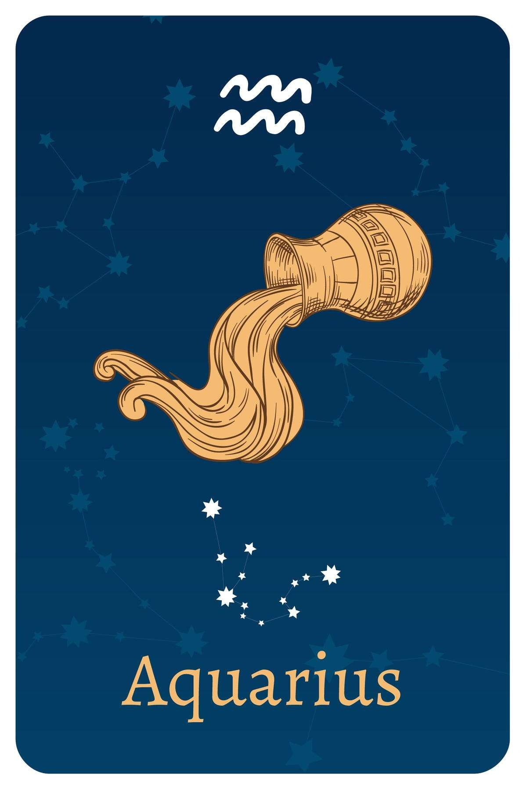

- Date Range : Jan 20 - Feb 18
- Element : Air
- Color : Blue
- Quality : Fixed
- Day : Saturday
- Ruling planet : Uranus
- Ruling house : Eleventh
- Lucky number : 4, 7, 11, 22, 29
- Lucky gem : Amethyst
- Top love Matches : Sagittarius
AQUARIUS (Jan 20 - Feb 18)
Aquarius Personality Traits
Strengths : Progressive, original, independent, humanitarian
Weaknesses : Runs from emotional expression, temperamental, uncompromising, aloof
Aquarius likes : Fun with friends, risky business, fighting for causes, intellectual conversations.
Aquarius dislike : Limitations, broken promises, being lonely, dull or boring situations.
Aquarius is one of the most unique signs of the zodiac, and people born under this sign experience a sense of uniqueness.
This makes them eccentric and energetic in their fight for freedom,
or at times shy and quiet, afraid to express their true personality.
In both cases, they are deep thinkers and highly intellectual people
who love to fight for idealistic causes. They can see people without
prejudice, making them truly special. Although they can easily adapt
to the energy that surrounds them, Aquarius representatives have a
deep need for alone time to restore their inner power.
The sign of Aquarius belongs to the element of Air, finishing the
story of Gemini and Libra and connecting them through the opposition
of freedom and relationships. They rely on their mind and spoken
words most of the time, and without mental stimulation, they might
lose interest even in things that initially excited them. They see
the world as a place full of possibilities and have a need to be
spontaneous, follow the moment, and live life to the fullest, never
wasting precious time.
Uranus is the ruler of Aquarius, with its traditional ruler Saturn
by its side. Although Uranus has an abrupt, timid, and sometimes
aggressive nature, the presence of Saturn grounds them enough to
help them find the distance they need from other people to remain
somewhat indifferent. Aquarians are visionaries and are always ready
for change, known for their intellectual abilities and for shaking
up the world once they're in it. They feel best as part of a certain
community, but they might have trouble finding the right place where
they truly feel they belong.
Aquarius Love Style
Aquarius in love may march to the beat of their own drummer—the free-love era wasn't named "The Age of Aquarius" for nothing.
Aquarius doesn't take a lot of stock in what "should" be done, but
Aquarius has their own rules, codes of ethics, and morality and
takes all three incredibly seriously. Aquarius may be skittish when
it comes to love. While they enjoy flirtatious relationships and can
easily be in a longterm "friends with benefits" situation, love—even
when they have deep feelings for the other person—can lead them to
feel trapped or scared of the future. An Aquarius doesn't want to
depend on another person, and they don't want someone else to depend
on them. Trying to navigate healthy codependence in a relationship
is a lifelong Aquarius challenge.
Aquarius is physically passionate, honest, and very in tune with
their sexuality. An Aquarius may find sex connects them more deeply
to themselves, as well as their partner, and believes that sex can
exist outside of love. An Aquarius cares deeply about their partner,
but believes that love is not asking another person to put the other
person's needs ahead of their own. An Aquarius in love isn't
selfish, they're pragmatic, and they're doing what's most honest for
them.
Aquarius Friendship Style
Aquarius will always take the initiative to meet someone and hear their story. Aquarians love finding connections to other people, and never feel self-conscious or out of place, even in a group of strangers. Good listeners and natural questioners, Aquarians can draw out anyone, getting a new acquaintance to tell an Aquarian things they've barely told anyone else before. But there is another side: Aquarius can be very private, and people think they know an Aquarius much better than they do. Aquarius likes having a large social circle, but cultivating close friends takes time and trust. Aquarius takes disappointment in friendships seriously, and takes it hard—a cancelled coffee meet-up won't make an Aquarius hold a grudge, but it will be a long time (if ever) they'll invite you closer into their social circle.
Three reasons why Aquarians make great friends
- They're fun. They'll never say no to an idea, and when they're at a party or event, they commit 100% of their energy to it.
- They have amazing perspective. Aquarians are good at making connections between random things, and are the best at recommending the perfect podcast or movie for whatever issue you're facing in your own life.
- They push you. An Aquarius will check to make sure you hit your deadlines, scheduled that review with your boss, or updated your LinkedIn. They're not doing this because they want to control you, but because they know that doing your best is what will make you happy.
Aquarians are amazing! Their name says it all:
A for analytical
Q for quirky
U for uncompromising
A for action-focused
R for respectful
I for intelligent
U for unique
S for sincere
Aquarius career, money & success traits
Aquarius' greatest career strength: Unflappability. Aquarians can juggle a lot of balls, but they never seem stressed. They don't feel stressed, either. By focusing on the here and now, Aquarius is good at tuning out any noise or self-doubt, and getting the job done.
Aquarius' greatest career challenge: Bureaucracy. An Aquarius has a good idea of how things should be done, and could probably do them better than whatever current system is in place. Aquarius needs to learn to adapt to what the boss may want—even if it's slower and more time consuming than what they might have done.
This is a sign that brings enthusiasm, excitement, and innovation to
the workplace and has a remarkable ability to exploit their
imagination for business purposes. Their high intellect combined
with their willingness to share their talents inspires many people
in their lives. They are visionaries who like to engage in humane
activities and need to work in a place that supports better
circumstances for endangered groups of people.
The finances of this zodiac sign can be spent on various risks
but can also be saved. All they need to create a saving zone is
something to look forward to. They are well-adapted to their sense
of style and are not afraid to show it. This is why their choice of
colors can make a difference in their emotional state. They can
excel in professions such as piloting, paragliding, and photography
but they also make excellent programmers, ingenious mathematicians,
and scientists. They often need to be able to show their personality
without many strict guidelines for the way they do so.

Motto
"There is no me, there is only we."
Famous Aquarius

Cristiano Ronaldo
(professional footballer)
Feb 5, 1985
Aquarius
Feb 5, 1985
Aquarius

The Weeknd
(Singer)
Feb 16, 1990
Aquarius
Feb 16, 1990
Aquarius

Shakira
(Singer)
Feb 2, 1977
Aquarius
Feb 2, 1977
Aquarius
Join Our Daily Overview
Your Astrological overview guides you on what to look out for and how to act in tune with the stars and planets each day.
Was this page helpful?
Do not selling My personal info!
© Copyright-2023 -All right reserved.